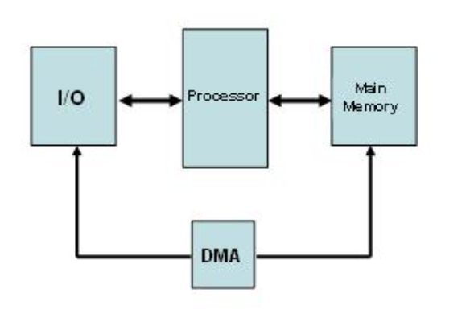

Operating Systerms Design and Implementation Notes
By Jiawei Wang
9. Exercises for Chapter 1
Question1
What are the two main functions of an operating system?
- Provide the users with an extended (i.e., virtual) machine
- Manage the I/O devices and other system resources.
Question2
What is the difference between kernel mode and user mode?
Why is the difference important to an operating system?
In kernel mode, every machine instruction is allowed, as is
access to all the I/O devices. In user mode, many sensitive instructions
are prohibited.
Operating systems use these two
modes to encapsulate user programs. Running user programs in user mode
keeps them from doing I/O and prevents them from interfering with each
other and with the kernel.
Question3
What is multiprogramming?
Multiprogramming is the rapid switching of the CPU between multiple processes in memory. It is commonly used to keep the CPU busy while one or more processes are doing I/O.
Question4
What is spooling? Do you think that advanced personal computers will have spooling as a standard feature in the future?
First Please check the Spooling.it is to use
software to simulate offline technology
the “Spool”
stands for Simultaneous Peripheral Operations On-Line, which I’ve be
metioned in the history of OS.
- Input spooling is the technique of reading in jobs, for example, from cards, onto the disk, so that when the currently executing processes are finished, there will be work waiting for the CPU.
- Output spooling consists of first copying printable
files to disk before printing them, rather than printing directly as the
output is generated
Input spooling on a personal computer is not very likely, but output spooling is widely used in nowadays computers.
Question5
On early computers, every byte of data read or written was directly handled by the CPU (i.e., there was no DMA—Direct Memory Access). What implications does this organization have for multiprogramming?
The DMA(Direct Memory Access):
First, In early CPU, when
data from I/O wants to access the memory, it need to go through the CPU
then to the Memory.
This bring these actions not
very effecient. By using DMA, which means add a DMA Controller between
I/O and Memory and the CPU don’t need to wait while sending the
data:

The prime reason for multiprogramming is to give the CPU something to do while waiting for I/O to complete. If there is no DMA, the CPU is fully occupied doing I/O, so there is nothing to be gained (at least in terms of CPU utilization) by multiprogramming.
Question6
List some differences between personal computer operating systems and mainframe operating systems.
- Personal computer systems are always interactive, often with only a single user.
- Mainframe systems nearly always emphasize batch or timesharing with many users
- On Mainframe systems: Protection is much more a issue as well as the efficient use of all resources
Question7
Give one reason why a closed-source proprietary operating system like Windows should have better quality than an open-source operating system like Linux. Now give one reason why an open-source operating system like Linux should have better quality than a closed-source proprietary operating system like Windows.
Closed Source: Company can vet the programmers, establish programming standards, and enforce a development and testing methodology, also the Closed Source means can help to protect the core technology for big company
Open Source: more people look at the code, so there is a form of peer review and the odds of a bug slipping in are much smaller with so much more inspection.
Question8
In view of the fact that the mere existence of a superuser can lead to all kinds of security problems, why does such a concept exist?
It is often essential to have someone who can do things that are normally forbidden. For example, a user starts up a job that generates an infinite amount of output. The user then logs out and goes on a three-week vacation to London. Sooner or later the disk will fill up, and the superuser will have to manu- ally kill the process and remove the output file. Many other such examples exist.
Question9
Why is the process table needed in a timesharing system? Is it also needed in personal computer systems in which only one process exists, that process taking over the entire machine until it is finished?
The process table is needed to store the state of a process that is currently suspended, either ready or blocked. It is not needed in a single process system because the single process is never suspended.
Question10
What is the essential difference between a block special file and a character special file?
Block special files consist of numbered blocks, each of which can be read or written independently of all the other ones. It is possible to seek to any block and start reading or writing. This is not possible with character special files.
The name “block device” comes from the fact that the
corresponding hardware typically reads and writes a whole block at a
time
The name “character device” comes from the fact that each
character is handled individually. Writing a byte to a character device
might cause it to be displayed on screen, output on a serial port,
converted into a sound, …
For more, see Unix.stackexchange.com:
Question11
In MINIX 3 if user 2 links to a file owned by user 1, then user 1 removes the file, what happens when user 2 tries to read the file?
The read works normally. User 2’s directory entry contains a pointer (fd) to the i-node of the file, and the reference count in the i-node was incremented when user 2 linked to it. So the reference count will be nonzero and the file itself will not be removed when user 1 removes his directory entry for it. Only when all directory entries for a file have been removed will its i-node and data actually vanish.
Question12
Are pipes an essential facility? Would major functionality be lost if they were not available?
No, they are not so essential. In the absence of pipes,
program 1 could write its output to a file and program 2 could read the
file. While this is less efficient than using a pipe between them, and
uses unnecessary disk space, in most circumstances it would work
adequately.
If you want to see the difference
between pipe and file. Please check this Note.
Question13
Windows does not have a
fork()system call, yet it is able to create new processes. Make an educated guess about the semantics of the system call Windows uses to create new processes.
Windows has a call spawn() that creates a new
process and starts a specific program in it. It is effectively a
combination of fork() and exec().
Question14
Why is the chroot system call limited to the superuser?
If an ordinary user could set the root directory anywhere in the tree, he could create a file etc/passwd in his home directory, and then make that the root directory. He could then execute some command, such as su or login that reads the password file, and trick the system into using his password file, instead of the real one.
Question15
Why does MINIX 3 have the program update running in the background all the time?
When a user program writes on a file, the data does not really go to the disk. It goes to the buffer cache(not fast enough). The update program issues SYNC calls every 30 seconds to force the dirty blocks in the cache onto the disk, in order to limit the potential damage that a system crash could cause.
Question16
In this Chapter1, we learned many System Calls in Minix3. Which call do you think is likely to execute most quickly. Explain your answer.
The getpid, getuid, getgid, and getpgrp, calls just extract a word from the pro- cess table and return it. They will execute very quickly. They are all equally fast.